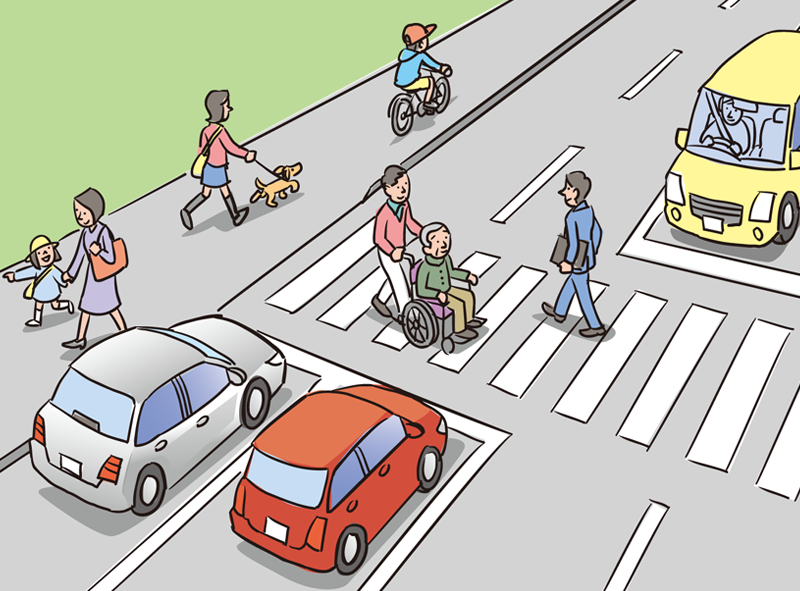

Traffic Rules in Japan
日本の交通ルール
Basic Rules for Drivers

Pay attention to pedestrians and other vehicles in traffic. Drive with care for others.
- Drivers and cyclists must keep to the left, while pedestrians should keep to the right side of the road.
- Drivers must yield to pedestrians.
- You must not drive under the influence of alcohol.
- You must not exceed the allowed number of passengers or load.
- While driving a vehicle, you must not use a cell phone or be distracted by the car navigation system.
- When you drive a vehicle, you must wear a seatbelt. All passengers in the vehicle must also wear seatbelts.
- When you drive with an infant younger than six years old, you must place the infant securely in a child seat.

Baby Bed

Child seat for infants

Child seat for schoolchildren
- Maximum speed limits for vehicles are shown on traffic signs and road markings. You must drive safely within the specified speed limits. When there are no signs or markings indicating the speed limit, drivers of regular-sized automobiles must obey the speed limits of 60 km/h on ordinary roads, and 100 km/h on expressways.
Types of traffic lights with meanings
Green light
Pedestrians may proceed and cross.
Vehicles other than lightweight vehicles, and streetcars/trams may go straight or turn left or right. Mopeds making two-step right turn may go straight ahead to the point for turning right, and change the direction they are heading.
Lightweight vehicles (bicycles, carts, etc.) may go straight and turn left. When turning right, these vehicles must proceed to the point of making a right turn, stop and change their direction to the right and wait at that point.
Yellow light
Pedestrians must not start to cross. A pedestrian who is already crossing the road must finish crossing quickly or else turn back.
Vehicles and streetcars/trams may not move further than the stopping point. However, if a vehicle is rapidly approaching the stopping point when the signal changes to yellow, and cannot stop safely, it may continue to proceed.
Red light
Pedestrians must not cross.
Vehicles and streetcars/trams may not proceed past the stopping point.
A vehicle or streetcar/tram, when already making a left turn at an intersection, may continue to proceed even if the signal light on the left is red.
A vehicle or streetcar/tram, when already making a right turn at an intersection, may continue to proceed even if the signal light on the right is red. In this case, the vehicle or streetcar/tram, must not obstruct the traffic of vehicles or streetcars/trams approaching on a green light. However, lightweight vehicles and mopeds making a two-step right turn must stop after crossing the road and wait at that point while the signal light on the right is red.
Green arrow light
Vehicles may proceed in the direction indicated by the arrow even if the signal light is yellow or red. (Vehicles may also make a U-turn when the signal arrow is indicating a right turn.) However, in the case of a signal arrow indicating a right turn, lightweight vehicles and mopeds making a two-step right turn may not proceed.
Yellow arrow light
Streetcars/trams may proceed in the direction indicated by the arrow even if the signal light is yellow or red, but pedestrians and vehicles may not proceed.
Flashing yellow light

Pedestrians, vehicles and streetcars/trams may proceed carefully, paying attention to other traffic.
Flashing red light
Pedestrians may proceed carefully, paying attention to other traffic.
Vehicles and streetcars/trams must stop at the stopping point before proceeding.
(Note) The term “stopping point” in this table refers to the point just before the stop line. In the absence of such a line, it is defined as follows:
- A point just before an intersection (where a crosswalk/pedestrian crossing or a bicycle crossing lane is located close to an intersection, just before the crosswalk/pedestrian crossing or the bicycle crossing lane);
- A point just before a crosswalk/pedestrian crossing, a bicycle crossing lane or a railroad crossing in places other than intersections; or
- The point where a traffic lights can be seen in places other than intersections without a crosswalk/pedestrian crossing, bicycle crossing lane or railroad crossing nearby.
The term “vehicles” refers to automobiles, mopeds, lightweight vehicles such as bicycles and carts, and trolley buses.
- JAF publishes Rules of the Road, which provides details of traffic regulations in Japan, and is available for purchase at JAF branch service counters or through the JAF website (Amazon.co.jp). The digital format is also available at the bookstores. For details, please contact a JAF Regional Office or check the JAF website.